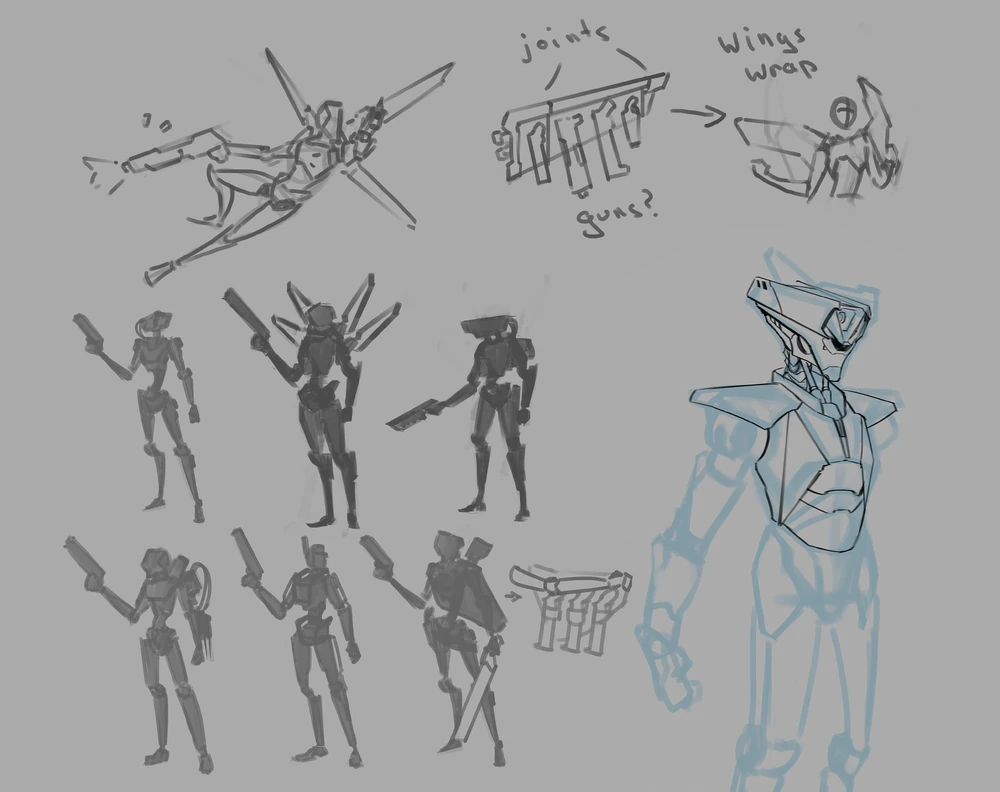
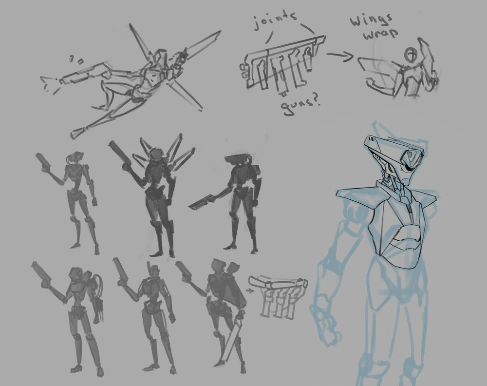

V1
placeholder navigation menu
Popis některých mechanik hratelné postavy V1
Pohyb
V1 je vybaven třemi ukazateli staminy, které povolují dashování do libovolné strany. Stamina se však nenabijí, během slidování. Během dashe vám je poskytnuto pár i-framů, jinými slovy jste na pár snímků nesmrtelný.
Pokud jste blízko zdi a vyskočíte ve vzduchu, tak se můžete odrazit od zdi a to maximálně třikrát
Pokud stojíte na zemi, tak můžete slidit po zemi po neomezenou dobu. V kombinaci se skoky je toto jednoduchý a rychlý způsob pohybu
Když se však pokusíte o slide ve vzduchu, tak slamnete o zem a ublížíte nepřátelům. Po slamnutí můžete vyskočit a získát o trochu větší výšku, či slidenout a získat bonusovou rychlost. Když slamnete a stihnete odskočit od zdi, tak se zpozdíte ve vzduchu a po dopadu můžete nabrat ohromnou rychlost, či výšku.
HP
V1 má kapacitu 100 HP, či s power-upem navíc 100 HP overheal, který pouze doplnit tímto power-upem. HP lze jednoduše naplnit skrze krev nepřátel, na což je dobrá brokovnice z důvodu množství projektylů. Po ztracení HP ztrácíte stylové body, takže pokud chcete dosáhnout vysokého skóre stylu, tak je potřeba nejen přesnost, ale i schopnost se vyhnout střelám nepřátel
 



Osobní poznámka
V1 je válečný stroj, který sám o sobě je unikátní, protože byl nahrazen V2 během testování. V1 má ve hře několik přezdívek jako například "Machine", či "Child of Man". Jedna z věcí, kterou jsem nezmínil je whiplash, což je speciální pohyb umožňující se přitáhnout na jakýkoliv objekt, či nepřítele